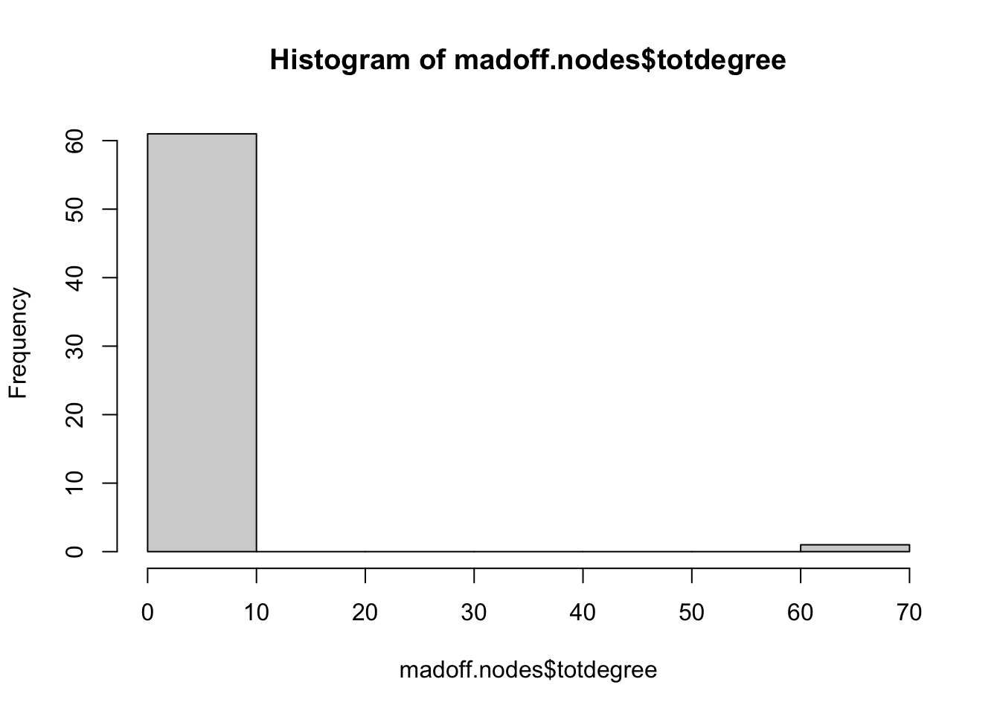
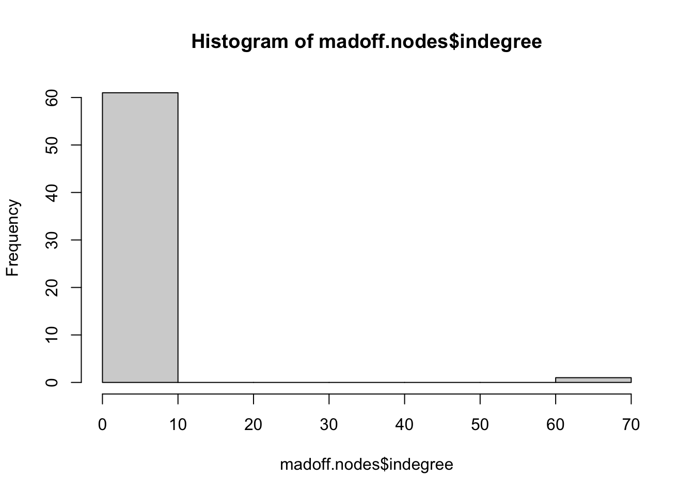
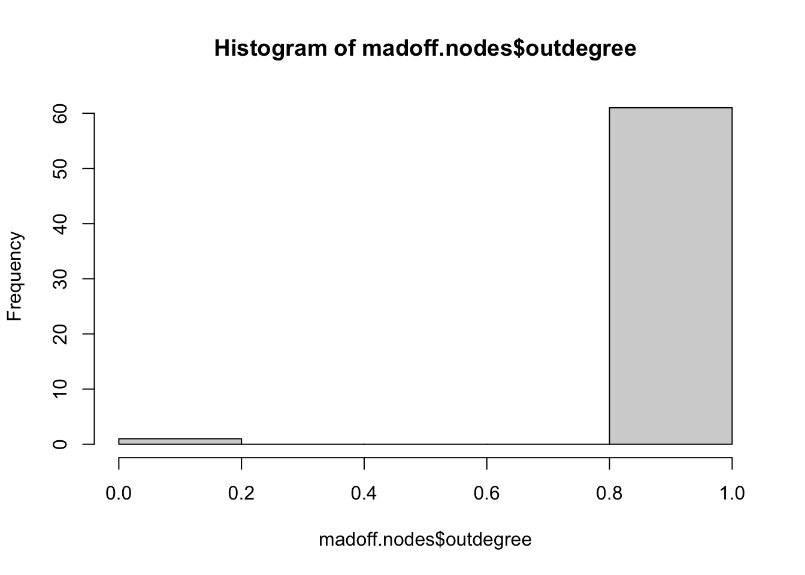

New names:
Rows: 61 Columns: 62
── Column specification
──────────────────────────────────────────────────────── Delimiter: "," chr
(1): ...1 dbl (16): Thema_Fund, Herald_Lux_Fund, Bank_Medici,
Pioneer_Alt_Investments,... lgl (45): HSBC_Holdings, Genevalor_Benbassat,
Phoenix_Holdings, Capital_Bank...
ℹ Use `spec()` to retrieve the full column specification for this data. ℹ
Specify the column types or set `show_col_types = FALSE` to quiet this message.
• `` -> `...1`
I read in these two data sets in case I want to play around with two different types. The madoff.ig is read in as a matrix.
If you have not done it before, evaluate the structure of the network (number of edges and vertices, dyad and triad census, etc.).
Compute the many measures of degree of the network of your choice, most preferably directed. Create a data frame called nodes where each row corresponds to a node and each column to an attribute of the node, namely the id, name or label, and different measures of degree: total, out-degree, and in-degree. What is the average degree of the network?
Compute the distributions of those measures (or histograms if your network is small). What does this tell us about the structure of the network?
hist(wire.nodes$outdegree)
Error in hist(wire.nodes$outdegree): object 'wire.nodes' not found
hist(wire.nodes$totdegree)
Error in hist(wire.nodes$totdegree): object 'wire.nodes' not found
hist(wire.nodes$indegree)
Error in hist(wire.nodes$indegree): object 'wire.nodes' not found
hist(madoff.nodes$totdegree)

hist(madoff.nodes$indegree)

hist(madoff.nodes$outdegree)

Density
edge_density(wire.ig, loops = T)
[1] 12.15385
The wire network is not too dense, but it is denser than the Madoff network below by a significant amount. The Madoff network is not dense meaning the nodes are not well connected at all. This may be good for Bernie Madoff because this would indicate he had a diverse array of clients who did not have much contact with one another.
edge_density(madoff.ig, loops = T)
[1] 0.01586889
Compute the density of the network. Is this a global or local measure? Does it have a relationship with average degree?
Random Network
Create a random (Erdos-Renyi) network with the same number of nodes and edges than the network of your choice. On igraph, the necessary commands are random.graph.game(n, p.or.m, type = c("gnp", "gnm"), directed = FALSE, loops = FALSE) (deprecated), sample_gnp(n, p, directed = FALSE, loops = FALSE) or sample_gnm(n, m, directed = FALSE, loops = FALSE). The p.or.m argument is to specify the probability of an edge \(p\) or the number of edges \(m\).
Compare the densities, dyad and triad censuses, and degree distributions, with the measures of the network of your choice. Does the comparison us something about the network of your choice?
This random network is slightly more dense than the actual Madoff network, but only by 0.02. The new network also has the same number of vertices as the original network, but I am confused as to why there is 1830 null types in the dyad census.